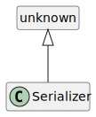

Class Serializer
Hierarchy-Diagram
{kind=link}
Legend
 class
class
Hierarchy
- unknown
- Serializer
Constructors
constructor
- new
Serializer(): Serializer Returns Serializer
Properties
Protected error
error
Type declaration
- (error): void
Parameters
- error: Error
Returns void
get
get
Type declaration
- (): ((error) => void)
Returns ((error) => void)
- (error): void
Parameters
- error: Error
Returns void
get
get
Type declaration
- (): TypeHintEmitter
Returns TypeHintEmitter
Protected Optional options
retrieve
retrieve
Type declaration
- (memberOptions?): boolean
Parameters
OptionalmemberOptions: MemberOptionsBase
Returns boolean
Protected serialization
set
set
Type declaration
- (errorHandlerCallback): void
Parameters
- errorHandlerCallback: ((error) => void)
- (error): void
Parameters
- error: Error
Returns void
Returns void
- errorHandlerCallback: ((error) => void)
set
set
Type declaration
- (type, serializer): void
Parameters
- type: Serializable<any>
- serializer: SerializerFn<any, TypeDescriptor, any>
Returns void
set
set
Type declaration
- (typeEmitterCallback): void
Parameters
- typeEmitterCallback: TypeHintEmitter
Returns void
Protected type
type
Methods
convert
- convert
As Array(sourceObject, typeDescriptor, memberName, serializer, memberOptions?, serializerOptions?): any[] Parameters
- sourceObject: any[]
Source object to convert
- typeDescriptor: ArrayTypeDescriptor
Type descriptor of source object
- memberName: string
Member name to convert
- serializer: Serializer
Serializer
OptionalmemberOptions: ObjectMemberMetadataMember options of memberName
OptionalserializerOptions: anyCustom serializer options
Returns any[]
- sourceObject: any[]
convert
- convert
As Map(sourceObject, typeDescriptor, memberName, serializer, memberOptions?, serializerOptions?): IndexedObject | {
key: any;
value: any;
}[] Performs the conversion of a map of typed objects (or primitive values) into an array of simple javascript objects with
keyandvalueproperties.Parameters
- sourceObject: Map<any, any>
- typeDescriptor: MapTypeDescriptor
- memberName: string
- serializer: Serializer
OptionalmemberOptions: ObjectMemberMetadataOptionalserializerOptions: any
Returns IndexedObject | {
key: any;
value: any;
}[]
convert
- convert
As Object(sourceObject, typeDescriptor, memberName, serializer, memberOptions?, serializerOptions?): IndexedObject Parameters
- sourceObject: IndexedObject
- typeDescriptor: ConcreteTypeDescriptor
- memberName: string
- serializer: Serializer
OptionalmemberOptions: ObjectMemberMetadataOptionalserializerOptions: any
Returns IndexedObject
convert
- convert
As Set(sourceObject, typeDescriptor, memberName, serializer, memberOptions?, serializerOptions?): any[] Performs the conversion of a set of typed objects (or primitive values) into an array of simple javascript objects.
Parameters
- sourceObject: Set<any>
- typeDescriptor: SetTypeDescriptor
- memberName: string
- serializer: Serializer
OptionalmemberOptions: ObjectMemberMetadataOptionalserializerOptions: any
Returns any[]
convert
- convert
Single Value(sourceObject, typeDescriptor, memberName?, memberOptions?, serializerOptions?): any Parameters
- sourceObject: any
- typeDescriptor: TypeDescriptor
OptionalmemberName: stringOptionalmemberOptions: ObjectMemberMetadataOptionalserializerOptions: any
Returns any
Performs the conversion of an array of typed objects (or primitive values) to an array of simple javascript objects (or primitive values) for serialization.